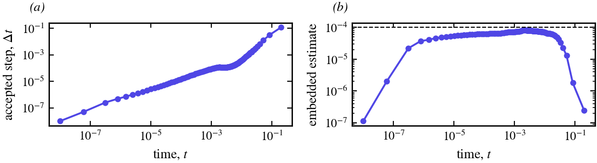
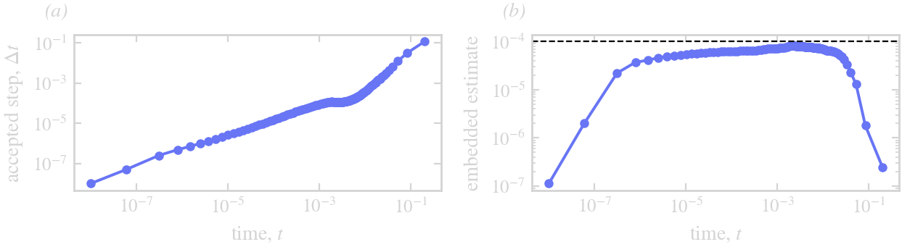

Limits
Close approach
The small-scale decomposition assumes that the stiff part of the velocity is local to each curve and diagonal in $k$, and that the coupling between curves is smooth. Where two curves, or two parts of one curve, come within a gap $d$, the facing segments are stiff in the coupling at $k \sim L/d$, in a way that is local along the curve and that no symbol in $k$ expresses. The step then needs $\Delta t \lesssim d \cdot (\text{a time scale})$, and the equal-arclength grid needs $N \sim L/d$ on the whole curve. ThetaL does not cure this; min_distance monitors it (between curves, and between parts of a curve more than a quarter of its length apart along it).
The smoothness of the velocity
$\theta_t$ contains $U_\alpha$, computed spectrally, so the normal velocity must be smooth to the tolerance at the grid points. A velocity interpolated from a finite element trace, or a flux jump read off a grid, has kinks between elements; they excite high modes and N keeps doubling. Fit such a velocity to the curve's grid first.
The tangential transport
After the rigid part is taken out, the tangential velocity of the deformation still moves the points along the curve, and that transport is explicit: modes of wavenumber $k$ oscillate at about $k|T|/s_\alpha$, which the explicit stages follow only for $\Delta t \lesssim s_\alpha/(k_{\max}|T|)$. A symbol of first order or more damps it; beyond it the step is unstable. In the manufactured test of the Method overview the runs without a damping symbol are unstable at Δt = 0.02 and stable at 0.01.
The initial layer
From a shape far from equilibrium under a stiff symbol (surface diffusion, $\sigma = -q^4$), the first steps are first order in Δt: modes with $|\sigma| h \gg 1$ decay within a step and drive $L_t$, which the explicit update of $L$ follows only for $\Delta t \ll 1/|\sigma|$. Once they have relaxed the schemes keep their orders (Method overview, panel (c)). Small first steps remove the layer; the embedded estimate picks them by itself:


(a) The accepted steps of the control in examples/step_control.jl, run to $t = 0.2$ (surface diffusion of a four-lobed flower, ETDRK2, estimate held below 10⁻⁴): from 10⁻⁸ through the layer to 0.1. (b) The embedded estimate of each accepted step, against the tolerance (dashed).
Frozen symbols
The rates are held for a step at the start-of-step length. A symbol that varies along the curve (anisotropy) is frozen at a bound; stiffness that is not diagonal in $k$ (variable coefficients, coupling between curves) cannot be expressed.